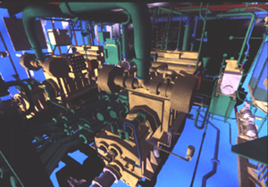

Dins del disseny assistit per computador (CAD) en 3D, les aplicacions més conegudes són les del disseny mecànic. Els camps d'aplicació més estesos són els de les indústries de l'automòbil, aeronàutica i naval. En el CAD mecànic s'utilitzen sempre models 3D, en mols casos de complexitat geomètrica elevada, i sovint variacionals. Les eines de visualització poden ser simples - generació de plànols en 2D - o realistes. Les aplicacions són interactives, i en alguns casos s'està començant a treballar amb interfícies de realitat virtual - en els sistemes de prototipat virtual -. Fora del camp mecànic, les principals aplicacions del CAD 3D es troben en el camp de l'arquitectura i urbanisme. Veiem alguns exemples:
|  |